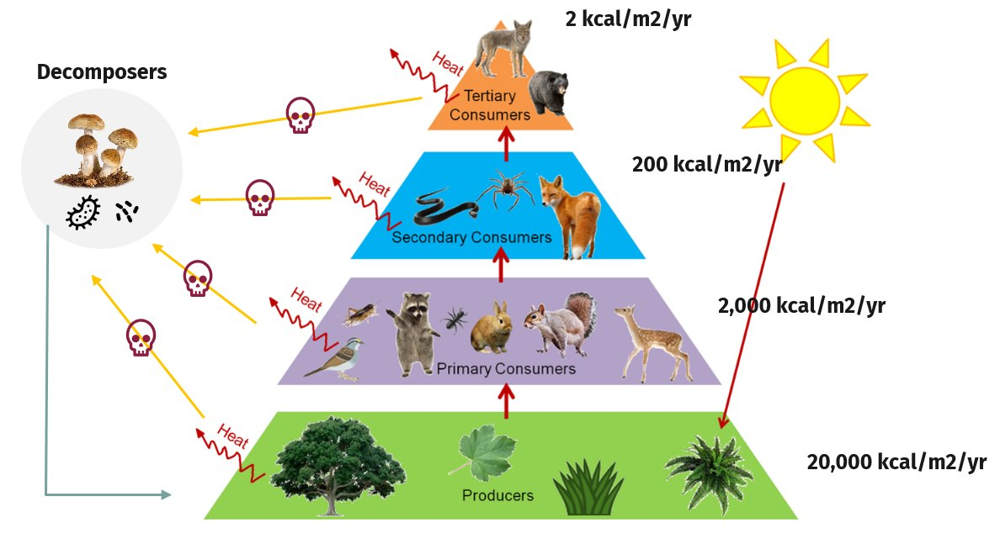
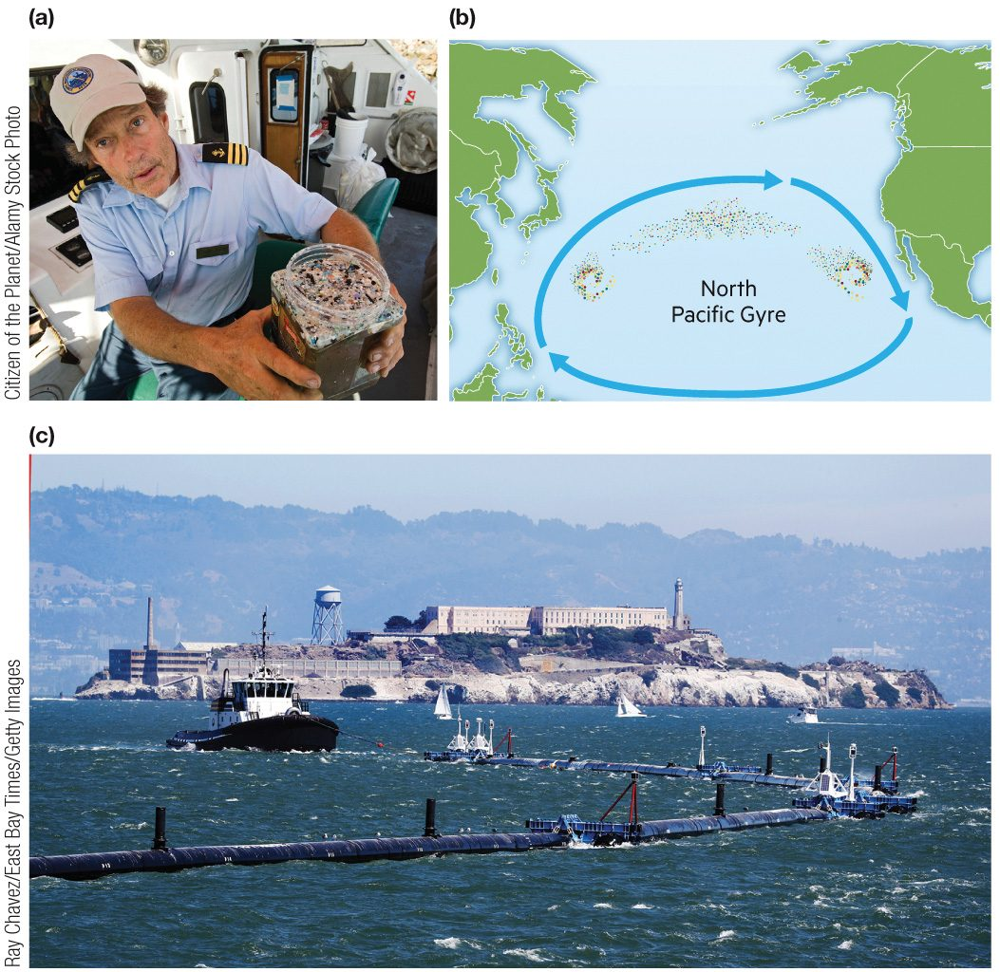
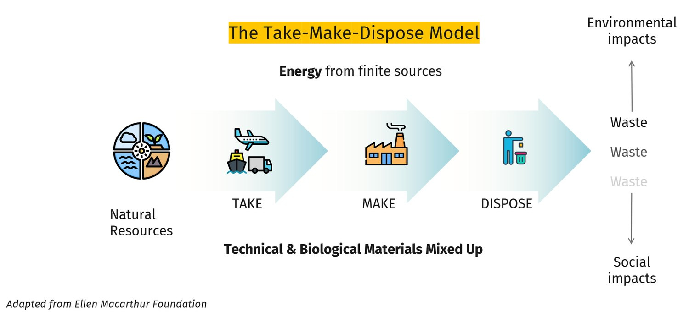
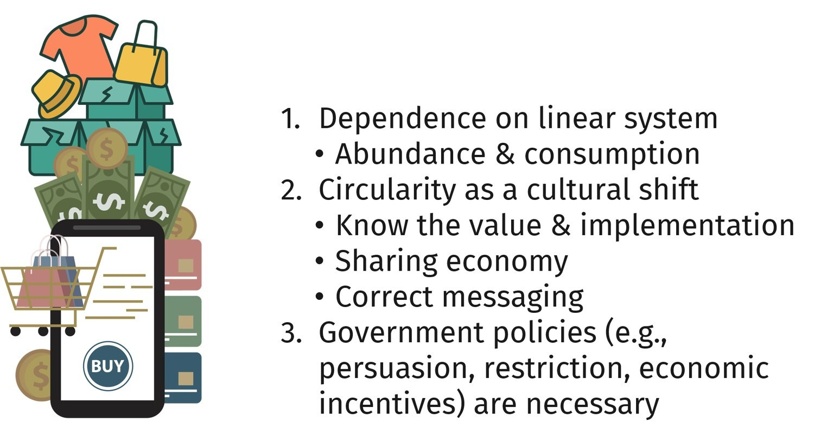
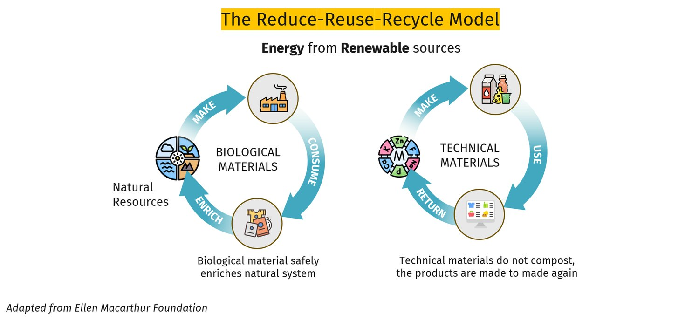
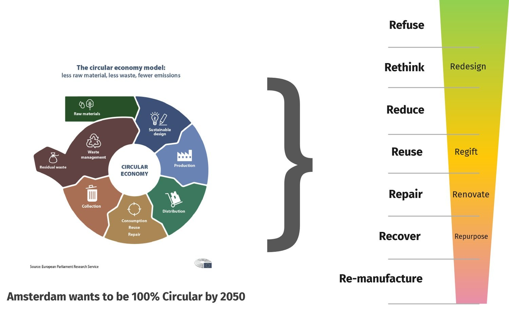

Earth is a closed system for materials, so nature recycles everything. Tap an icon.

Lecture17This slideNatureFigure and numbers are from the lecture slide and are teaching numbers.
Nature’s waste management
Nature has no landfills
In nature, nothing is thrown away. Decomposers such as fungi and bacteria break down dead plants and animals and their waste. The nutrients go back into the soil, where plants take them up again.
Nature’s waste management
Energy flows
Sunlight is the energy source. Plants capture some of it. Each time something eats something else, only a small part of the energy moves up, and the rest leaves as heat. Energy flows through and does not cycle.
Nature’s waste management
Materials pass through trophic levels
The matter in a plant becomes part of the animal that eats it, then part of the animal that eats that one. When they die, decomposers return it to the soil and air. Matter is used over and over, because the Earth is a closed system for materials.
Nature’s waste management
Everything decomposes and is reused
Nothing is wasted in a healthy ecosystem. A fallen leaf, a dead fox and a pile of droppings all feed other living things. A circular economy tries to copy this.
Facts and numbers
Energy at each level
These are the teaching numbers from the lecture figure, in kilocalories per square meter per year. Each level has about one-tenth of the energy of the level below. That ratio is our own observation.
Producers (plants)
20,000
kcal/m²/yr
Primary consumers
2,000
plant eaters
Secondary consumers
200
eat the plant eaters
Tertiary consumers
2
top of the pyramid
SOS110 · Lecture 17 · Part 2 · Our waste
Out of sight is not gone
In 1997, Captain Charles Moore found a huge area of floating plastic between Hawaii and California. Tap an icon.

Lecture17This slidePlastic dumpingFigure: (a) Captain Moore, (b) the North Pacific Gyre, (c) a cleanup barrier. Credits are printed on the figure. Facts: chapter 15.
More information
A soup of plastic
The patch is a soup of floating flakes mixed with larger things like bags and bottles. Ocean currents called the North Pacific Gyre swirl it together.
The patch did not exist before the 1960s, when plastic became a new material.
More information
Tiny pieces, big problem
Plastic breaks into very small fragments called microplastics. Krill, mussels and small fish eat them by accident.
Toxic chemicals in the plastic can then build up as one animal eats another, up the food chain. This is called bioaccumulation.
More information
Added chemicals
Makers add chemicals to plastic to change how it behaves. Three examples:
Phthalates make plastic flexible.
Bisphenol A makes it hard.
PBDEs make it resist fire.
More information
Can we clean it up?
Floating barriers like the one in picture (c) try to collect plastic from the water. Cleanup helps, but plastic keeps coming. Making less is the part that works upstream.
Facts and numbers
Plastic production
Plastic was a new material in the 1960s. Today we make it very fast.
Made each year
200M+
tons of plastic
Found in
1997
by Captain Moore
Did not exist before
1960s
plastic was brand new
SOS110 · Lecture 17 · Part 2 · Our waste
How much do we throw out?
The EPA says Americans add 4.9 pounds of garbage per person every day. Pick a group and see the total. Where does it all go? Mostly to a landfill. Then share one way you could cut your own.
Every day4.9pounds
Every year1,789pounds
That is one person. Look at the chart: which countries make more?
Lecture17This slideTrash per personChart adapted from OECD (2022). Group sizes are teaching numbers.
More information
Municipal solid waste (MSW)
MSW is the garbage households and businesses throw away. It does not count waste made upstream, in mines and factories, before the product reaches you.
Facts and numbers
US trash in numbers
Per person, the United States is one of the largest makers of MSW. Only Denmark is higher on this chart.
Per person, per day
4.9 lb
EPA estimate
Per person, per year
1,800+
pounds, as the chapter states
Compared with 1960
~2×
nearly double today
Your answer
Where could you cut your trash?
A leverage point is a small change that makes a big difference. Pick the one that fits you best.
1Pick one leverage point.
2Write one thing you will do to cut your own trash.
SOS110 · Lecture 17 · Part 2 · Our waste
Landfills: bury it and watch it
Most trash from US cities and suburbs is buried. The main way is isolation: keeping waste away from people and the environment.
Lecture17This slideLandfillsThe picture is a drawing of a modern sanitary landfill. Facts are from chapter 15.
More information
A sanitary landfill
New landfills are placed with care: not in wetlands or floodplains, and with the ground, water and rainfall in mind. Each day the new waste is covered with dirt so it does not blow away or attract animals.
More information
Liner and drains
The bottom has a layer of clay or plastic that water cannot pass through. Pipes above it collect leachate and send it to a tank for safe disposal.
More information
Gas wells
Pipes collect methane so it can be burned or used for fuel, instead of floating into the air.
More information
Leachate tank
Leachate is pumped from the bottom of the landfill to a tank, then treated.
More information
Monitoring wells
Wells around the landfill check whether leachate or methane has escaped.
More information
Beneath the surface
Deep wells inject liquid waste from industry, mining and oil and gas into porous rock under layers that water cannot cross. Radioactive waste from defense work goes to a salt cavern near Carlsbad, New Mexico.
More information
When isolation fails
The EPA and consultants have found that leachate will eventually escape as plastic liners break down, carrying heavy metals and other chemicals. Rotting waste also makes methane.
Facts and numbers
Isolation in numbers
Landfills are the biggest human source of methane in the world.
Landfill share of human methane
37%
worldwide
Radioactive waste cavern
2,000 ft
deep, in salt, near Carlsbad NM
Well failures
1000s
linked to deep-well injection
SOS110 · Lecture 17 · Exercise 1 · Know how ASU Zero Waste works
How ASU Zero Waste works
About 5 minutes. Read how ASU sorts its waste, then take the quick check. Tap an icon.
Lecture17This slideASU Zero WasteSource: ASU Zero Waste pages at cfo.asu.edu. The drawing is ours. ASU lists change, so check the ASU Waste Directory.
ASU Zero Waste
The blue bin
ASU says: “Use the Blue Bin for all your commingled recycling.” Paper, rigid plastic and metal are the usual items. Empty liquids first and keep food out.
Cardboard: “Please flatten cardboard before placing it in the bin.”
ASU’s accepted-items list changes over time. Check the ASU Waste Directory before you toss.
ASU Zero Waste
Bins for every space
ASU uses different bins for different spaces:
Deskside bin: 7 gallons.
Community “Slim Jim”: 23 gallons.
Toter: 96 gallons, for cleanouts and moves.
Hamper: for large amounts of cardboard, in certain central spots in a building.
ASU Zero Waste
Streams with their own page
Some things do not go in the blue bin. ASU gives each its own page: E-waste, Film and soft plastics, Styrofoam and Compost.
We could not check where the drop-offs are for each residence hall.
ASU Zero Waste
Think before you throw
ASU’s recycling page says “Think before you throw” and points to the Waste Directory. You can use it to “search for and discover how to dispose of, recycle and repurpose everyday items.”
SOS110 · Lecture 17 · Exercise 1 · Know how ASU Zero Waste works
Quick check: where does it go?
Pick the right place for each item. Then tap the pencil to say what you will do.
0 right
Lecture17This slideQuick checkAnswers follow ASU Zero Waste pages. Special drop-off covers e-waste and film and soft plastics. Check the ASU Waste Directory for today’s rules.
Your answer
What I will do
1Which item will you most likely sort wrong?
2What is one thing you will do to be a more sustainability-minded student?
SOS110 · Lecture 17 · Part 3 · Life cycle assessment
Follow an iPhone start to finish
A life cycle assessment (LCA) adds up the impact of every step. Tap a red icon on the picture for the steps, or a benefit on the right.
Lecture17This slideLife cyclePicture and step names are from the lecture. Step descriptions are typical, not exact. Benefits follow the lecture.
Step 1
Resource extraction
A phone contains many minerals and metals, such as aluminum, copper, lithium and rare earths. They are dug out of the ground and processed before any phone is built. Mining uses land, water and energy and leaves waste rock behind.
Step 2
Manufacturing
Factories turn the materials into chips, screens, batteries and cases, then assemble the phone. Making the parts uses energy and makes waste, such as scrap and chemicals.
Step 3
Packaging
Each phone is sold in a box with paper and plastic inside. Packaging is thrown away almost at once, so it is a quick way to make waste.
Step 4
Transportation
The parts and the finished phones travel by plane, ship and truck, often around the world. Transport burns fuel.
Step 5
Useful life
This is the part you control. Charging uses electricity. A longer life means fewer new phones need to be made. Repairing a cracked screen or replacing a battery stretches the useful life.
Step 6
End of life
When a phone stops being useful it can go two ways. Disposal sends it to a landfill. The loop in the picture sends it back: the phone is reused by someone else or recycled so its metals become new products.
Benefit of an LCA
Resource optimization
When you see how much each step uses, you can spot where to use less.
Benefit of an LCA
Sustainable product design
The life cycle tells designers what to change so a product lasts longer and can be repaired or recycled.
Benefit of an LCA
Competitive advantage
A company that cuts waste and cost can win customers who care about the environment.
Benefit of an LCA
Reduced environmental impacts
Fixing the biggest steps first cuts waste and emissions where it counts.
Benefit of an LCA
Compliance and risk management
Knowing the whole life cycle helps a company meet environmental rules and avoid costly problems.
About 8 minutes. Look at the phone’s life cycle. Tap an icon for a hint, then tap the pencil to answer.
Lecture17This slideiPhone LCAPicture is from the lecture. Step descriptions are typical, not exact.
A hint
What other steps are there?
The picture shows six steps. Check that you can name them in order, then ask: which steps happen where you cannot see them? Hints from the lecture: mineral extraction, packaging, transportation, and reuse, recycling and repair.
A hint
Where are the gaps?
A gap is a place where materials, energy or value are lost or thrown away. For a phone, look at mining waste, packaging, shipping fuel and phones that end up in a drawer or a landfill.
A hint
What could change?
Examples of changes: less packaging, a phone that is easy to repair, a take-back program, fewer new phones. Pick one step and write one change.
Your answer
My iPhone life cycle
1Pick one step where a sustainable change would help most.
2Write one change you could make there.
Step 1
Resource extraction
A phone contains many minerals and metals, such as aluminum, copper, lithium and rare earths. They are dug out of the ground and processed before any phone is built. Mining uses land, water and energy and leaves waste rock behind.
Step 2
Manufacturing
Factories turn the materials into chips, screens, batteries and cases, then assemble the phone. Making the parts uses energy and makes waste, such as scrap and chemicals.
Step 3
Packaging
Each phone is sold in a box with paper and plastic inside. Packaging is thrown away almost at once, so it is a quick way to make waste.
Step 4
Transportation
The parts and the finished phones travel by plane, ship and truck, often around the world. Transport burns fuel.
Step 5
Useful life
This is the part you control. Charging uses electricity. A longer life means fewer new phones need to be made. Repairing a cracked screen or replacing a battery stretches the useful life.
Step 6
End of life
When a phone stops being useful it can go two ways. Disposal sends it to a landfill. The loop in the picture sends it back: the phone is reused by someone else or recycled so its metals become new products.
SOS110 · Lecture 17 · Part 3 · Life cycle assessment
The linear economy creates gaps
Take, make, dispose. Tap an icon on the picture or the list to see the gaps.

Lecture17This slideLinear economyFigure adapted from the Ellen MacArthur Foundation, as printed on the figure.
Linear economy
Take
The line starts by taking raw materials from nature, powered by energy from finite sources such as oil and coal.
Linear economy
Technical and biological materials mixed up
Products mix materials that could return to soil (biological) with materials that must be recovered by industry (technical). Mixed together, neither can be recovered well.
Linear economy
Waste at every step
Waste leaks out at every step of the line. At the end the product is thrown away, so the materials are lost.
Linear economy
Impacts pile up
Waste adds up as environmental impacts such as pollution, and social impacts on the people who live near mines, dumps and landfills.
SOS110 · Lecture 17 · Part 3 · Life cycle assessment
Challenges and opportunities
Moving off the straight line is not easy. Tap an icon to see each challenge and the opportunity inside it.

Lecture17This slideChallengesPicture and challenges are from the lecture. Opportunities are our examples.
Challenge and opportunity
Dependence on the linear system
Cheap goods and endless choice make buying new feel normal. The whole system is built around making and selling more things, so changing it is hard.
Opportunity: notice what you buy and why. Buying less is the cheapest form of waste reduction.
Challenge and opportunity
Circularity as a cultural shift
People need to know the value of keeping things in use and know how to do it. A sharing economy (renting, borrowing, swapping) means fewer things need to be made. Correct messaging matters: people need clear, honest information about what to do.
Opportunity: repair cafés, rental and swap programs, and clear labels.
Challenge and opportunity
Government policies are necessary
Governments can use persuasion (campaigns that encourage change), restriction (rules such as bans on certain single-use items), and economic incentives (such as deposits on bottles or tax breaks).
Opportunity: you can vote, advocate and support policies that favor circular systems.
SOS110 · Lecture 17 · Part 4 · The circular economy
The circular economy closes the gaps
Keep materials in loops and run them on renewable energy. Tap an icon.

Lecture17This slideCircular economyFigure adapted from the Ellen MacArthur Foundation, as printed on the figure. Text follows Bocken et al. (2016).
Circular economy
The biological cycle
Biological materials, such as food scraps and natural fibers, are designed so they can be consumed and then enrich the natural system. This is like nature: they decompose and feed new growth. In the biological cycle, materials are biodegraded to start a new cycle (Bocken et al., 2016).
Circular economy
The technical cycle
Technical materials, such as metals and plastics, do not compost. The products are made to be made again: they are used, returned, and made into new products. Designing so they can be taken apart makes this possible.
Circular economy
Energy from renewable sources
A circular economy runs on renewable energy. Closed loops only work as long as their energy supply lasts (Ayres, cited in Bocken et al., 2016).
Circular economy
Reduce, reuse, recycle
The loops are built on reduce, reuse and recycle, with repair and remanufacture added. Bocken et al. call these ways of keeping resources in use slowing and closing loops.
SOS110 · Lecture 17 · Part 4 · The circular economy
Why circularity is valuable
Researchers describe three ways to keep resources in use, and a new way to earn from them. Tap an icon.
Lecture17This slideValueSource: Bocken, de Pauw, Bakker & van der Grinten (2016).
The value of circularity
Slow the loop
Slowing resource loops means designing long-life goods and extending a product’s life through repair and remanufacturing. The same product is used for longer, so fewer new ones are needed (Bocken et al., 2016).
The value of circularity
Close the loop
Closing resource loops means recycling, so waste from one use becomes the raw material for the next. It closes the loop between post-use waste and production.
The value of circularity
Narrow the flow
Narrowing resource flows means resource efficiency: using fewer resources to do the same job. It is the earliest, cheapest step.
The value of circularity
New ways to earn value
Bocken et al. note that circular business models shift the aim from selling things to earning from the flow of materials and products over time. Examples include renting or leasing a product, take-back programs, and industrial symbiosis, where one factory’s waste becomes another’s input.
SOS110 · Lecture 17 · Part 4 · The circular economy
A circular economy has limits
It is a goal to work toward, not a magic fix. Tap an icon.
Lecture17This slideLimitsSource: Bocken et al. (2016) and the sources it cites. Drawing is ours.
The limits of circularity
Waste degrades and has to go somewhere
Even in a closed system, waste materials have only two long-run fates: recycling and reuse, or dissipative loss, where they spread out and cannot be recovered (Ayres, in Bocken et al., 2016). Downcycling, which makes a lower-value product, only delays the linear flow from production to waste.
The limits of circularity
Recycling can be costly
Take-back and collection systems need new partners such as retailers, logistics companies and collection points. Bocken et al. note that reduced material costs may come with higher labor and logistics costs.
The limits of circularity
Mixed materials cannot be pulled apart
Products that mix biological and technical materials, so the materials cannot be recovered, are called “monstrous hybrids” in the circular economy literature (Bocken et al., 2016).
The limits of circularity
Rebound effects
Circular strategies can cause rebound effects: customers may spend their cost savings on other polluting activities, such as flights (Bocken et al., 2016).
SOS110 · Lecture 17 · Part 4 · The circular economy
Linear vs circular
Same needs, two designs. Which gaps does each leave?
Linear economy
Circular economy
Model
Take, make, dispose
Reduce, reuse, recycle (plus repair)
Waste
Leaks out at every step
Designed out, and loops are closed
Materials
Technical and biological mixed up
Kept in separate biological and technical cycles
Energy
From finite sources
From renewable sources
Value comes from
Selling more things
Keeping things and materials in use over time
Gaps
Creates gaps
Closes the gaps
Quick question: Which model leaves more gaps for waste to escape? The linear model. The circular model closes them.
Lecture17This slideLinear vs circularComparison is built from the lecture pictures and Bocken et al. (2016).
SOS110 · Lecture 17 · Exercise 3 · The circular residence hall
ASU’s circular resource system
About 4 minutes. A campus can be a circular system too. Tap an icon, then go to the next slide to triage.
Lecture17This slideASU circular systemSource: ASU Circular Resource System page, cfo.asu.edu/circular-resource-system. Drawing is ours.
ASU circular resource system
ASU’s commitments
ASU’s Circular Resource System page lists these commitments:
30% aversion by fiscal year 2025.
90% diversion by fiscal year 2025.
Each year, raise the value of diverted materials in the hierarchy of reuse.
Each year, cut single-use plastics headed for the landfill.
Aversion is making less waste to begin with. Diversion is keeping waste out of the landfill.
ASU circular resource system
Campus collection infrastructure
ASU tracks every stream: trash, commingled recycling, food waste, green waste and yard waste, and has done so since fiscal year 2007. Bins come in several sizes, and compost, e-waste, film and soft plastics and Styrofoam have their own pages.
This is how a campus keeps materials moving. We could not verify what each residence hall offers.
ASU circular resource system
Single-use plastics
Nearly 14% of ASU’s waste is single-use plastics. ASU plans to work with suppliers to cut them.
ASU circular resource system
Think before you throw: Campus Triage
“Triage” means deciding what to do first. On the next slide, pick the best move for each item: refuse it, reuse or repair it, recycle or compost it, or send it to the landfill as a last resort.
SOS110 · Lecture 17 · Exercise 3 · The circular residence hall
Campus Triage
Think before you throw. Pick the best first move for each item. The best moves come first: refuse, reuse, recycle, and landfill last.
0 right
Lecture17This slideCampus TriageThe order follows ASU’s “hierarchy of reuse” idea from its Circular Resource System page.
SOS110 · Lecture 17 · Exercise 3 · The circular residence hall
Design a circular residence hall
About 12 minutes in teams. Close the loop in three systems. Tap an icon for ideas, then tap the pencil to submit your team’s picks.
ThinkHow does each loop save materials, water or energy, and who has to change a habit?
Photo: instructor-supplied
Lecture17This slideCircular residence hallIdeas are general suggestions, not ASU rules, except where the slide names ASU.
Circular residence hall
Solid waste loop
Ideas to pick from:
Set up the deskside recycling bin and landfill bin, and learn what goes where.
Flatten cardboard and use the cardboard hamper in your building if there is one.
Carry a refillable bottle, a mug and a bag. Refuse free single-use items.
Share supplies with roommates, buy things that last, and swap or donate at move-out.
Circular residence hall
Water flow loop
Ideas to pick from:
Take shorter showers and turn off the tap while you brush.
Report leaks and dripping fixtures to maintenance.
Wash only full loads of laundry, in cold water.
Refill a bottle instead of buying bottled water.
Ideas are general suggestions, not ASU rules.
Circular residence hall
Electricity loop
Vampire load (also called standby or phantom power) is electricity that devices use while plugged in but off or idle.
Plug chargers, TVs and consoles into a power strip and switch it off.
Unplug chargers when the phone is full.
Use sleep settings and turn off the lights when you leave.
Choose LED bulbs and efficient devices when you buy.
Ideas are general suggestions. Standby power is often cited as a few percent to around ten percent of home electricity, so check a source before quoting a number.
Your answer
Our circular residence hall
1Pick one move for your solid waste loop.
2Pick one move for your water loop.
3Pick one move for your electricity loop.
4Which move would a team of residents find hardest, and why?
SOS110 · Lecture 17 · Part 5 · Examples from other parts of the world
Circular thinking around the world
Cities and countries are trying this now. Tap an icon, and watch the video.

Lecture17This slideAround the worldPicture is from the lecture. Video link: youtube.com/watch?v=hWkX0bsBgHg.
Around the world
The European approach
The picture shows a ladder of moves, from the best to the last resort: refuse, rethink, redesign, reduce, reuse, regift, repair, renovate, recover, repurpose, re-manufacture. The higher the move, the more value is kept.
Europe has adopted circular economy principles as part of its strategy: boosting recycling and cutting waste, creating jobs, and reducing emissions (Bocken et al., 2016).
Around the world
Amsterdam wants to be 100% circular by 2050
The lecture picture says “Amsterdam wants to be 100% Circular by 2050.” The city is working on every part of the loop: raw materials, design, production, distribution, consumption, collection and waste management.
Around the world
Watch: Amsterdam, the circular city
Amsterdam: The City Committed to a Circular Economy (Luke Nijkamp).
Opens in a new tab. https://www.youtube.com/watch?v=hWkX0bsBgHg
Around the world
Encouraging cases
Circular ideas are already working in electronics, clothing, furniture and construction. Think about these benefits: environmental (less waste), economic (new markets and savings) and social (jobs and shared resources).
SOS110 · Lecture 17 · Exit ticket
Exit ticket
Counts for participation. Pick an answer, then tap Show answer.
Which sentence best describes a circular economy?
Lecture17This slideExit ticketCorrect answer: B. A circular economy keeps materials in loops.
SOS110 · Lecture 17 · Takeaway
Close the loop
Nature has no landfills. We can design our way closer.
Nature cycles every material and lets energy flow through.
A life cycle shows where the gaps in a product are, and a circular economy closes them.
Start where you live: sort well, make less, and cut your water and electricity use.
Photo: instructor-supplied
Lecture17This slideTakeawayThe forest photo is on the cover.
 Photo: instructor-supplied
Photo: instructor-supplied

 Photo: instructor-supplied
Photo: instructor-supplied